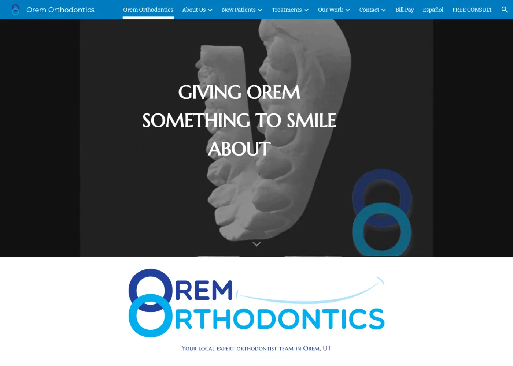
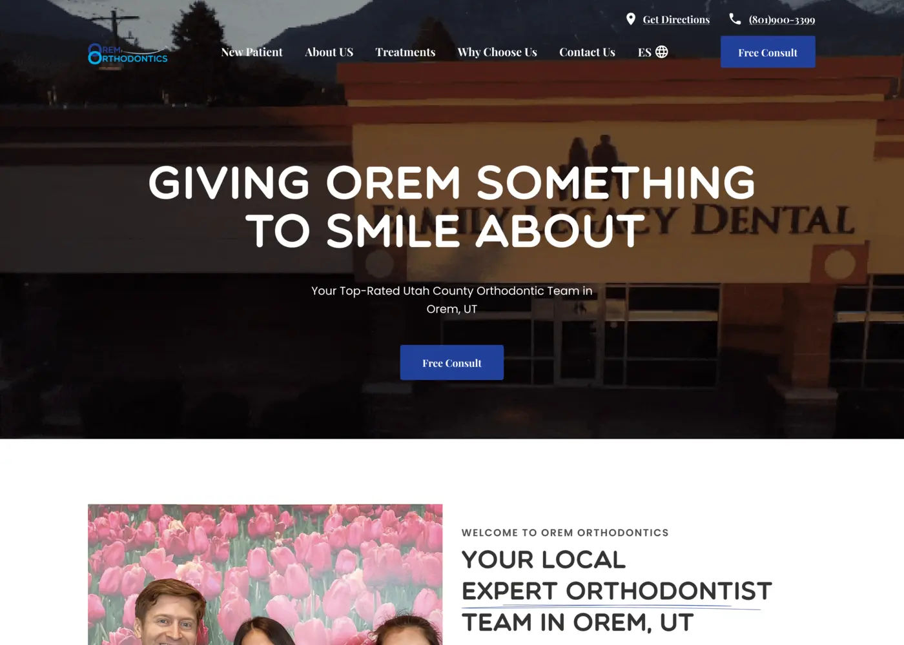

Live result


Before After01 — Drag to compare
From 0 to 34 Leads: a website redesign for a Harvard-trained orthodontist →
The old site was a Google Site: slow, broken, and lead-less — despite a Harvard-educated doctor behind it. I audited all 48 pages, rebuilt the IA around a 5-part patient journey, and rebuilt it in Webflow with a full Spanish translation.
34
New leads / 6mo
96
Pages (EN + ES)
3mo
Timeline